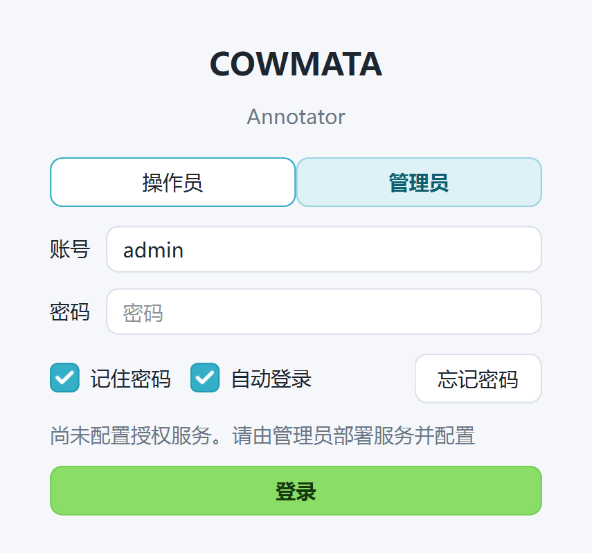
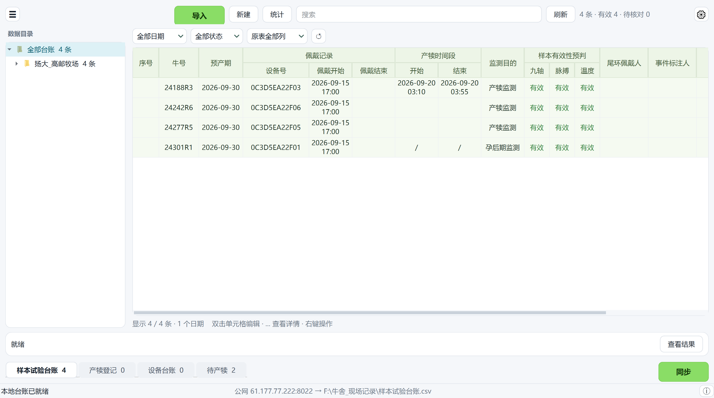
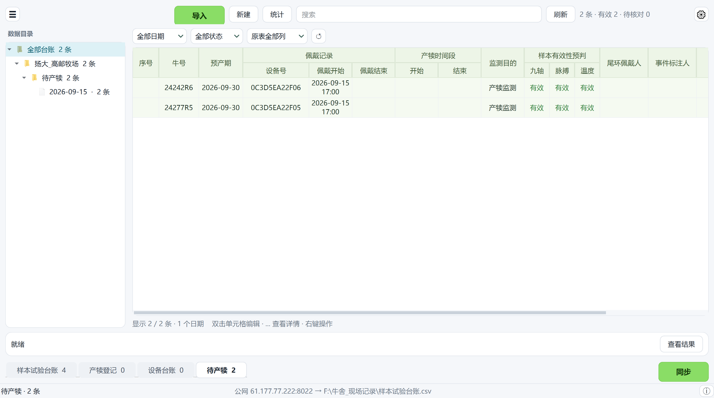
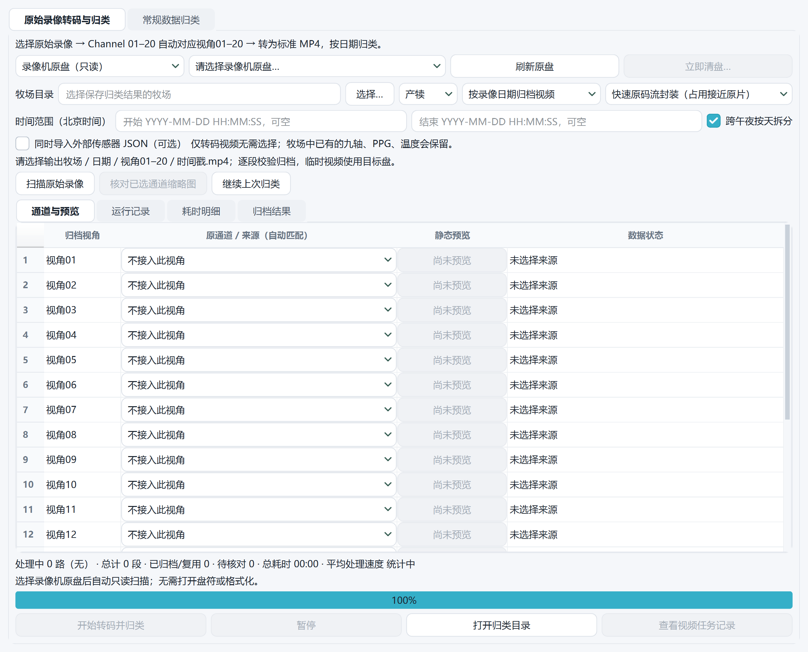
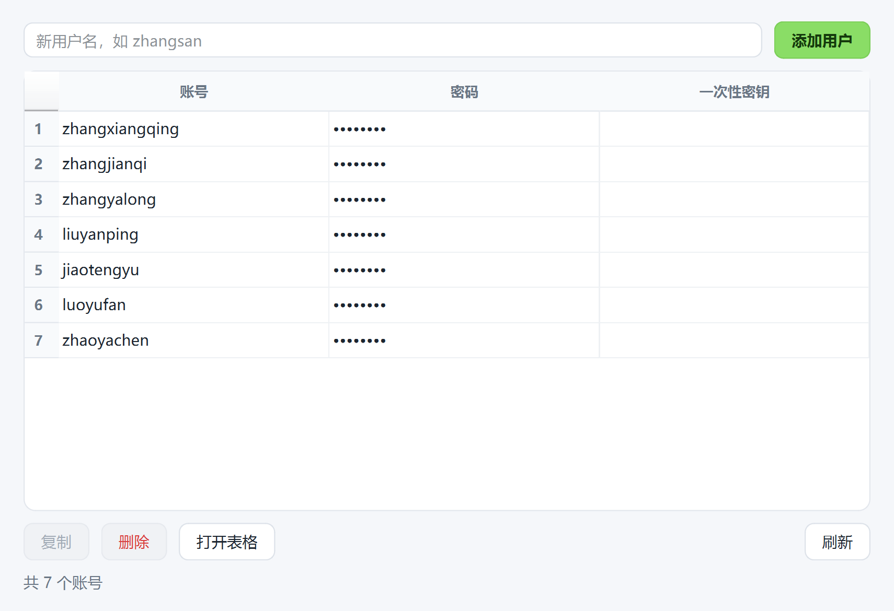

登录
一个账号，同时用于标注、上传和下载。

- 选择 操作员 或 管理员。
- 输入账号、密码；操作员在新电脑首次登录时再填一次性密钥。
- 点 登录。
1打开工程
- 文件 → 打开工程… Ctrl+O。
- 选择牧场、类别和日期。
- 工作自动保存；文件 → 关闭工程 Ctrl+W。
2上传台账
上传 → 台账 Ctrl+U。原“现场台账上传器”的全部功能，已内置。

- 导入：选择 Excel 或 CSV。
- 核对表格；双击单元格可修改。
- 同步：上传到服务器。
底部四张表：样本试验台账、产犊登记、设备台账、待产犊。

| 产犊开始 / 结束 | 归类 |
|---|---|
| 均为空 | 待产犊（尚未产犊） |
| 时间在佩戴期内 | 产犊 |
| “/”，或产犊在拆除设备之后 | 孕晚期 |
| 只填一项、先后颠倒、格式错误；死胎 / 难产 / 产后监测却未填时间 | 待核对 |
补填产犊时间并同步后，该牛自动从“待产犊”移到“产犊”或“孕晚期”，服务器上的 待产犊台账.csv 同步更新。
3下载数据
下载 → 端侧数据… Ctrl+D。按台账下载九轴、PPG、温度。

- 更新台账并下载：先读取最新台账，再下载。
- 待产犊的牛：佩戴期间持续下载。
- 台账分类变化后，三类数据一起移到新目录。
下载 → 数据归类：录像转码与归类、常规归类、继续上次归类。

4标注
- 左侧选一份记录。
- 标注 → 自动生成候选…，或拖选波形后 用所选区间建立候选。
- 对照视频修正起止；编辑 → 修改标签…。
- 标注 → 完成本份… Ctrl+Enter。
模型候选不是真值，需人工确认。
5工具
- 时间同步：精细校准、相机校准。
- 录像：统一录像目录、导出标准 MP4、索引与核验。
- 视图：放大视频 Ctrl+E、波形分屏、全屏 F11。
- 设置… Ctrl+,
账号
帮助 → 账号 → 用户与密钥…（管理员）。

- 输入新用户名（小写字母开头，如 zhangsan）。
- 点 添加用户：自动生成 8 位密码和一次性密钥，并已复制。
- 把三项发给本人；密钥用于首次激活电脑，之后只需账号和密码。
快捷键
| Ctrl+O | 打开工程 | Ctrl+S | 保存 |
| Ctrl+U | 台账 | Ctrl+D | 端侧数据 |
| Ctrl+Z / Y | 撤销 / 重做 | Ctrl+F | 查找记录 |
| Ctrl+Enter | 完成本份 | Ctrl+E | 放大视频 |
| F1 | 快速开始 | Ctrl+Q | 退出 |